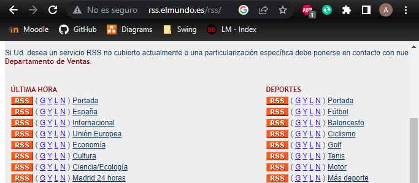
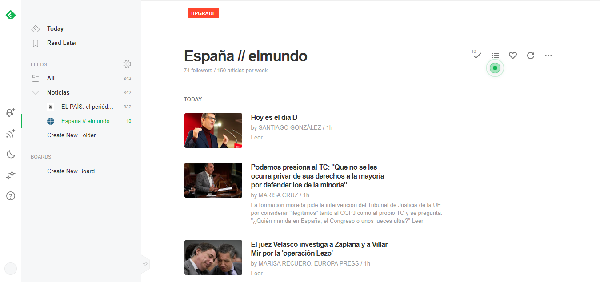

Subscripción a un RSS
Subscribirnos a un RSS a día de hoy es muy sencillo, en internet buscaremos el RSS al que nos queramos subscribir, yo en mi caso me voy a subscribir a el RSS de el mundo, concretamente a la última hora de españa.
Al pulsar en el icono RSS de España nos llevara a un fichero XML del cual copiaremos la dirección web. Ahora debemos hacer uso de un lector de RSS, los hay locales y online. Yo voy a usar la página Feedly para leer el RSS. Dentro de esta página agregaremos la dirección de nuestro RSS y lo podremos previsualizar, ademas si se actualiza nos mandaran notificaciones de que hay nuevo contenido
